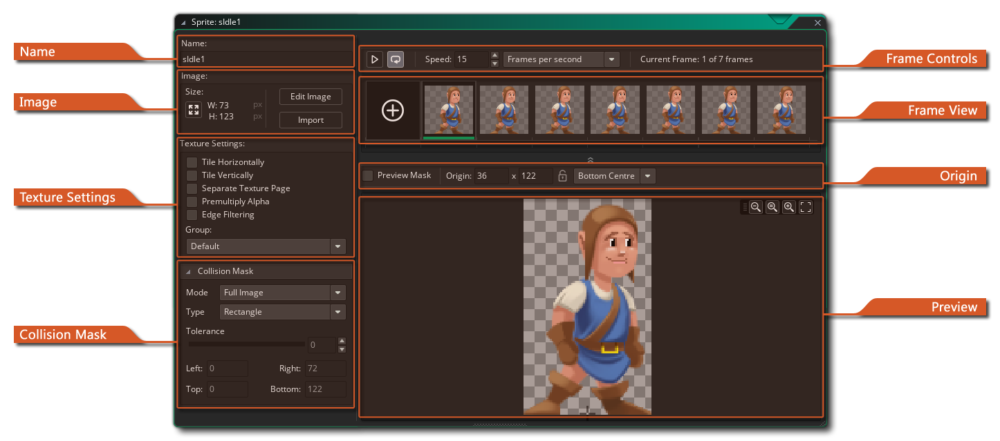
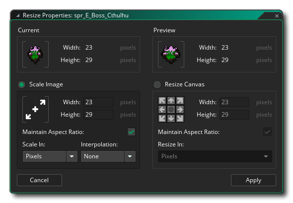

El editor de sprites es donde configuras las propiedades generales de cualquier recurso de sprite que hagas. Puede abrir esta ventana creando un nuevo sprite (haga clic con el botón derecho  en la carpeta de recursos de sprite y selecciona "Crear"), haciendo doble clic
en la carpeta de recursos de sprite y selecciona "Crear"), haciendo doble clic  en un sprite existente o haciendo clic con el botón derecho
en un sprite existente o haciendo clic con el botón derecho  un sprite existente y seleccionando "Propiedades". Las partes que componen el Editor de Sprite son las siguientes:
un sprite existente y seleccionando "Propiedades". Las partes que componen el Editor de Sprite son las siguientes:
Aquí puedes nombrar el sprite. El nombre de sprite es el que se usará en todo el proyecto del juego para identificar el sprite como un recurso y solo puede ser alfanumérico y solo puede usar el símbolo "_" de la barra inferior. Si bien puede usar números en el nombre de los sprites, el nombre no puede comenzar con un número, ya que eso lo convertiría en un nombre de recurso no válido al usar GML o DnD™.
En esta sección puede establecer el tamaño de la imagen haciendo clic en el botón Tamaño de Sprite
. Esto abrirá la siguiente ventana: 
Aquí puede ver una vista previa del sprite antes y después de aplicar las transformadas elegidas, y la siguiente sección es para establecer las nuevas propiedades de sprites y se divide en dos partes:
- Escala de imagen: con esta opción, puede cambiar el tamaño del lienzo de sprite draw y cualquier imagen que contenga en el sprite se estirará y escalará para adaptarse al nuevo tamaño. Puede elegir escalar y mantener la relación de aspecto de la imagen base, y también puede elegir escalar en Píxeles o en Porcentaje. Dependiendo del tipo de imagen con la que trabaje, también puede habilitar la interpolación lineal o no (en general, la interpolación lineal "suavizará" los píxeles sobre un área y por lo tanto es mejor dejarla para el diseño de píxeles).
- Redimensionar lienzo: esta opción redimensionará el lienzo de dibujo al nuevo tamaño sin escalar los contenidos. Puede establecer el punto de "anclaje" para el cambio de tamaño usando las flechas direccionales y luego establecer el valor del tamaño. Existe una opción para mantener la relación de aspecto al cambiar el tamaño del lienzo y en la parte inferior puede optar por establecer los valores de cambio de tamaño en píxeles o como un porcentaje.
Cuando esté satisfecho con el nuevo tamaño, puede hacer clic en Aplicar para aplicar los cambios y cerrar la ventana Propiedades de cambio de tamaño.
NOTA: Esta opción solo está disponible para sprites de mapa de bits y estará en gris para los sprites de animación esqueleto o SWF.En esta sección también puede abrir el Editor de imágenes para dibujar en su sprite, o puede hacer clic en el botón " Importar " para importar un elemento creado previamente. Los Sprites se pueden importar desde la mayoría de los formatos de mapa de bits ( PNG, JPG, GIF, etc...) pero GameMaker Studio 2 también es compatible con sprites vectoriales (SWF) y sprites de animación esquelética (Spine). Para obtener más información sobre estos formatos, consulte la sección sobre Importar Sprites que no son de mapa de bits. Tenga en cuenta que al importar sprites de mapa de bits se pueden seleccionar varios archivos de imagen en el explorador de archivos y cada uno se le añadió a la misma sprite separados sub-imágenes (frames).
Esta sección de la ventana de propiedades de sprites trata sobre cómo GameMaker Studio 2 almacena las imágenes que componen su sprite en páginas de texturas para usar con dispositivos y navegadores. Para las plataformas de escritorio esto normalmente no es demasiado importante, pero cuando comienzas a desarrollar para dispositivos móviles o web, la gestión adecuada de tus activos de imagen (texturas) es muy importante ya que las texturas mal administradas pueden tener un efecto perjudicial en tu juego, causando problemas de rendimiento.
Las casillas de verificación Mosaico: Horizontal y Mosaico: Vertical, de forma predeterminada, no están marcadas normalmente, ya que la mayoría de las veces no desea colocar azulejos en los sprites. Sin embargo, en ciertas circunstancias, puede desear que se muestren en mosaico, lo que significa que debes verificar estas opciones, especialmente si vas a escalar la vista o la sala, ya que escalar puede introducir artefactos en los gráficos de un juego si la página de textura no se genera correctamente.
Si tu sprite se va a usar como un mapa de texturas, entonces deberías marcar el recuadro Página de textura separada y al sprite se le dará una página de texturas propia (ten en cuenta que cada sub-imagen también tendrá su propia página de texturas, entonces si tu sprite tiene 10 imágenes, generarás 10 páginas de textura). Esto aumentará tremendamente las necesidades de memoria de textura de tu juego, por lo que debes tener mucho cuidado al usar esta opción. También tenga en cuenta que, en general, si su sprite está utilizando esta opción para 3D, entonces las texturas deberían ser una potencia de 2 (es decir,> 128x128, 256x256, 512x512, etc.).
Luego, puedes elegir el grupo de texturas al que deseas que pertenezca el recurso sprite. Básicamente, un grupo de texturas (previamente definido en el Administrador de grupos de texturas ) es algo que puedes configurar para que todos los recursos de imágenes que necesites para salas o niveles específicos de tu juego puedan almacenarse juntos. Entonces, por ejemplo, puedes tener todas tus imágenes de nivel 1 en un grupo de texturas, todas tus imágenes de nivel 2 en otro, etc., y GameMaker Studio 2 intentará colocar todos esos recursos agrupados en la misma página de textura para reducir la página de textura intercambiando mientras tu juego se ejecuta en la plataforma objetivo elegida.
NOTA: Esto puede no ser siempre necesario y el aumento del rendimiento de este método dependerá de si el dispositivo de destino está vinculado a la CPU o a la GPU.
Puede encontrar más información sobre páginas de texturas aquí.La siguiente opción es habilitar alfa pre-multiplicada para las imágenes de sprites. Cuando está habilitado, esto pre-multiplicará el alfa de todas las imágenes secundarias del sprite, y esto normalmente solo es necesario dibujar sprites en las superficies, o para algunos efectos especiales específicos. Para el uso normal de los sprites no debería verse una diferencia notable entre el sprite normal y el pre-multiplicado.
Finalmente tenemos Edge Filter. Esta opción es específica para cuando tienes habilitada la interpolación lineal para tu juego y estás viendo "halos" de color alrededor de tus sprites. Esto se debe a que el hardware interpola de múltiples texels de origen en la página de texturas a la vez, y puede ser particularmente obvio cuando escala los juegos en resolución. Habilitar esto filtrará los píxeles del borde para tomar el color del píxel del sprite alfa completo más cercano y así combinar los píxeles interpolados sin el halo que estaba presente previamente.
Todos los sprites tienen una máscara de colisión que corresponde al área del sprite que se usará para detectar colisiones cuando el sprite está asignado a una instancia. Primero puede establecer el Modo para la máscara de colisión, que puede ser uno de los siguientes:
Además del modo de máscara de colisión, también hay varios tipos de máscara de colisión que puede elegir en el menú desplegable:
- Automático: GameMaker Studio 2 calculará la máscara de colisión automáticamente en función de los valores de sprite alpha (esto dependerá de la configuración de tolerancia que se explica a continuación).
- Imagen completa: la máscara se calculará con sus límites siendo los mismos que los límites izquierdo, derecho, superior e inferior del sprite.
- Manual: Seleccionar esto significa que desea establecer los límites de la máscara de colisión usando los valores de entrada para izquierda, derecha, arriba y abajo.
La siguiente imagen ilustra las diferentes opciones de máscara:
- Rectángulo: una máscara de colisión rectangular simple. Este es el más rápido de resolver cuando se usa en su proyecto.
- Elipse: crea una máscara de colisión elíptica. Esto es más lento de resolver.
- Diamante: crea una máscara de colisión "diamante". Esto es más lento de resolver y genera más sobrecarga de CPU.
- Preciso: Esto crea una máscara de colisión precisa basada en el contorno del sprite. Si el sprite tiene múltiples subimágenes, entonces será un compuesto de los bordes de todas las subimágenes colocadas una sobre otra. Tenga en cuenta que la máscara precisa se recortará en el cuadro delimitador si el Modo está configurado en Manual y cambia los valores predeterminados. Esto es muy lento y genera mucha sobrecarga de CPU.
- Preciso (por cuadro): crea una máscara de colisión precisa por cuadro (es decir, la máscara cambiará para ajustarse al contorno de cada cuadro diferente). Tenga en cuenta que la máscara precisa se recortará en el cuadro delimitador si el Modo está configurado en Manual y usted cambia los valores predeterminados. Este es, con mucho, el tipo de máscara de colisión más lenta que debe resolverse y debe evitarse excepto en muy, muy específico e infrecuente casos.
Las opciones de control de colisiones son muy importantes para su juego, ya que influirán directamente en cómo interactúan sus objetos y cómo se ejecuta su juego, con configuraciones incorrectas que incluso tienen un impacto negativo en el rendimiento general. ¿Porqué es eso? Bueno, siempre que dos instancias se encuentran, y ambas instancias tienen una máscara válida, se genera un evento de colisión al verificar la superposición de la máscara, que puede ser precisa o no, y puede adaptarse al índice de la imagen o no. A continuación se muestra una imagen para ilustrar esto:
Debajo de esto, tiene el control deslizante de tolerancia alfa, que indica la tolerancia para crear la máscara con respecto a la transparencia de los píxeles de los sprites: con una mayor tolerancia, los píxeles que son parcialmente transparentes quedan fuera de la máscara, mientras que con una tolerancia menor, la máscara tendrá en cuenta esos píxeles. Esto influye tanto en el cuadro delimitador (cuando no está configurado en manual) como en la máscara para una verificación de colisión precisa.
Finalmente puede establecer los límites de la Caja de delimitación para la máscara. El cuadro delimitador es el nombre dado al área rectangular en la que se ajusta la máscara sprite. Solo los píxeles dentro de este cuadro delimitador se utilizan para la máscara y estarán involucrados en la verificación de colisiones, y de forma predeterminada esto se calcula automáticamente, llevando la tolerancia alfa a cuenta. Si ha marcado con precisión, esta será separada para cada subimagen también. Al configurarlo usted mismo, puede ingresar los valores en los cuadros para arriba, abajo, izquierda o derecha, o puede hacer clic
en la vista de sprite y arrastre para "dibujar" sobre el sprite. Tenga en cuenta que al "dibujar" el cuadro delimitador, la máscara se genera automáticamente para ajustarse a los valores finales.
Vale la pena señalar que si va a la ventana de vista previa, puede ajustar la máscara de colisión usando los "controles" que se encuentran en cada esquina. Al hacer clic y arrastrar estos se ajustará la máscara de colisión de la misma forma que los valores de entrada para el cuadro delimitador.
La barra superior del editor de sprites contiene las propiedades de origen del sprite y los controles de zoom para la ventana de vista previa. Aquí puede ver el ancho y la altura del sprite, así como establecer el origen. Este es el punto en el sprite que corresponde a su posición dentro de la sala, es decir: cuando creas una instancia en una posición particular x / y, el origen del sprite se coloca allí. Por defecto, es la esquina superior izquierda del sprite, pero a menudo es más conveniente usar el centro o puede que desee utilizar alguna otra posición, por lo que puede hacer clic
En la parte superior derecha están los controles del zoom, donde puedes acercar o alejar la imagen de vista previa según sea necesario. Haga clic en el
para hacer que la imagen sea 1: 1 con los píxeles reales.
La ventana de vista previa de sprite muestra el sprite como se verá en el juego, y se puede acercar o alejar usando la rueda del mouse
, y revisado usando el
+
Esta parte del editor de sprites muestra cada uno de los diferentes cuadros que componen un solo sprite. Puedes hacer clic
en la esquina superior, y puedes hacer clic para quitar el marco del sprite. También puede hacer clic
/
+
Los controles de marco son para reproducir en la ventana de vista previa la animación de los cuadros, con el botón Reproducir comenzando / deteniendo la animación y el botón Loop
utilizado para establecer si el sprite gira
(vuelve al fotograma 1 cuando se alcanza el último fotograma) o ping-pongs (retrocede por los fotogramas cuando se alcanza el último fotograma) y puede establecer la velocidad a la que se reproducirán desde el cuadro de entrada a la izquierda. La velocidad de cuadro puede basarse en "Cuadros por segundo" o "Cuadros por cuadro de juego". El número total de fotogramas disponibles se muestra a la derecha junto con el fotograma actual que se ha seleccionado, y puede seleccionar varios fotogramas con los que puede seleccionar fotogramas utilizando